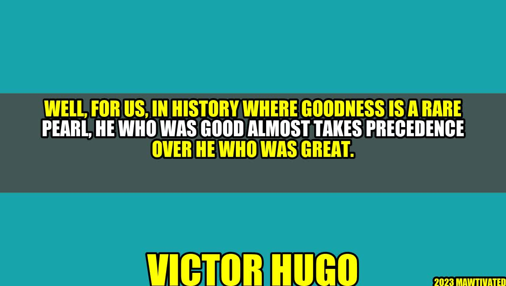

The Power of Kindness and Compassion
In a world where greatness is highly praised and sought after, being good almost takes a back seat. However, history has shown that those who exert goodness and kindness towards others often leave a lasting impact on people's lives.
A story that illustrates this point well is that of Victor Hugo, the acclaimed French author of Les Misérables and The Hunchback of Notre-Dame. One day, Hugo lost a gold ring in his home and searched for it frantically. His maid saw him and searched for the ring as well. When she found it, she quietly placed it in a drawer where Hugo could easily find it. Hugo was overjoyed to find the ring and exclaimed, "How happy you have made me!" The maid replied, "How happy I am to see you happy!"
"In history where goodness is a rare pearl, he who was good almost takes precedence over he who was great." - Victor Hugo
This simple act of kindness from the maid made a profound impact on Hugo, so much so that he wrote about it in his diary. This story shows that goodness need not be grand or extraordinary, but rather simple acts of kindness can leave a lasting impact on people's lives.
Examples of Goodness Over Greatness
There are many examples throughout history and in our daily lives that demonstrate the power of goodness over greatness. Some of these examples include:
- A mother's love and sacrifice for her children
- A teacher's dedication to their students
- A stranger's act of kindness towards someone in need
- A friend's support during a difficult time
- An employee's honesty and integrity in the workplace
These actions may seem small and insignificant, but they can have a huge impact on those around us and can contribute to making the world a better place.
Conclusion
In summary, goodness should be valued just as much as greatness. Small acts of kindness and compassion can make a big difference in people's lives and can leave a lasting impact. To prioritize goodness over greatness, we can:
- Practice empathy and understanding towards others
- Be mindful and present in our interactions with others
- Take the time to perform acts of kindness, no matter how small they may seem
Curated by Team Akash.Mittal.Blog
Share on Twitter Share on LinkedIn